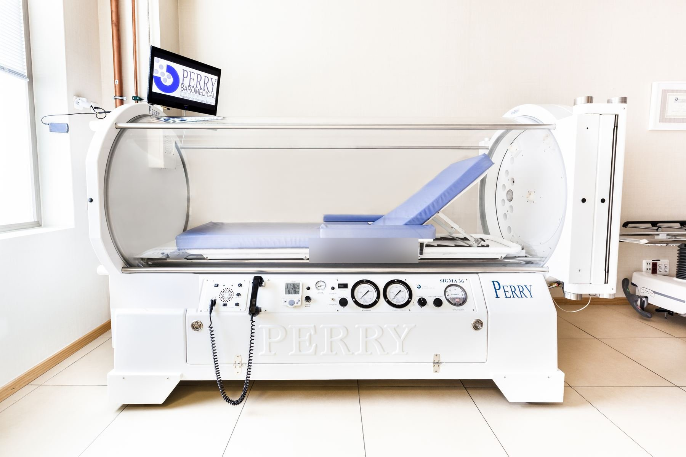
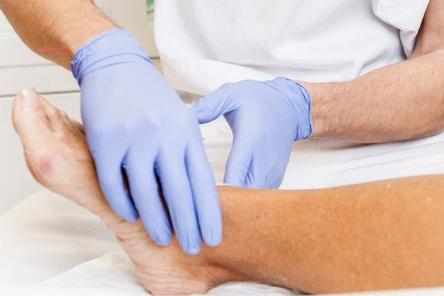
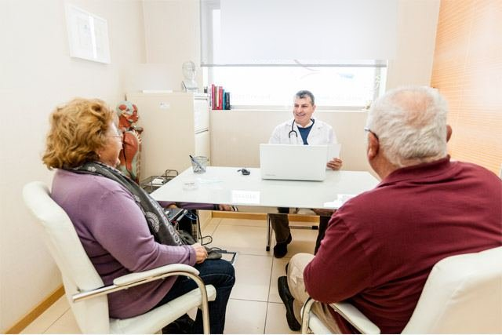
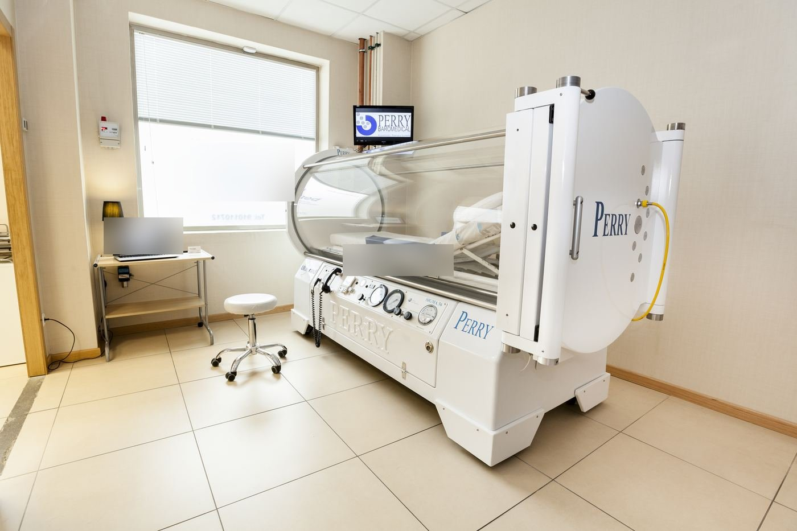
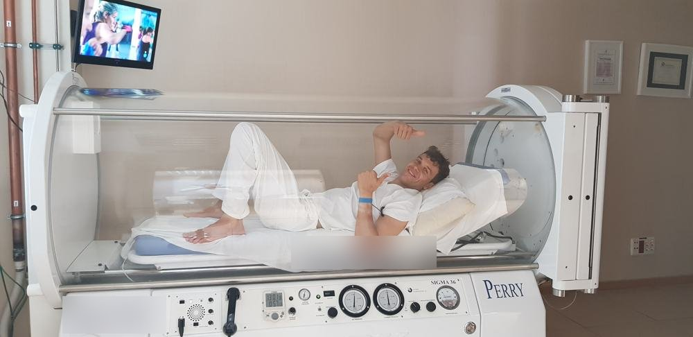

Terapia OHB
La terapia OHB (Oxigenoterapia hiperbárica) consiste en el uso médico del oxígeno en concentraciones del 100% de saturación aplicado por medio de cámara hiperbárica para tratar diversas enfermedades y dolencias.
Seguir leyendoMedicina hiperbárica · Madrid
Oxigenoterapia hiperbárica con cámara transparente y un equipo médico que le acompaña en cada sesión.

Quiénes somos
Desde hace más de ocho años hemos realizado más de 7.000 sesiones de cámara hiperbárica, y actualmente son numerosos los profesionales de la salud y especialistas que colaboran con nosotros y confían en nuestros tratamientos para sanar a sus pacientes.
En Clínica Sanitos trabajamos con cámaras hiperbáricas de última generación Perry Baromedical, completamente transparentes y con capacidad de alcanzar el 100% de pureza de oxígeno. Realizamos los tratamientos entre 2 y 3 atmosferas de presión.
Además, en Clínica Sanitos disponemos de un cuadro médico multidisciplinar, que junto con la tecnología y aparatología más avanzada, nos permite ofrecer otras especialidades complementarias como biorresonancia, podología, enfermería, células madre, factores de crecimiento y pediatría.
Tratamientos
La terapia OHB (Oxigenoterapia hiperbárica) consiste en el uso médico del oxígeno en concentraciones del 100% de saturación aplicado por medio de cámara hiperbárica para tratar diversas enfermedades y dolencias.
Seguir leyendo
En Clínica Sanitos ofrecemos a nuestros pacientes un completo servicio de podología. Un gabinete especializado en el tratamiento de diversas dolencias y la realización de todo tipo de análisis.
Seguir leyendo
La biorresonancia es un tratamiento basado en conceptos de medicina natural y biológica. Además de ofrecer información curativa, trabaja con un total de 500 programas terapéuticos específicos para cada caso.
Seguir leyendoDescubre más sobre lo que tratamos en nuestro blog
Nuestra cámara hiperbárica
En Clínica Sanitos confiamos en las cámaras hiperbáricas de Perry Baromedical. Por una serie de razones muy concretas: efectividad de los tratamientos, comodidad del paciente, facilidad del manejo por parte del operador…

Preguntas frecuentes
Después de recibir muchas preguntas a través de nuestra web, queremos resolver algunas dudas: ¿Cuántas sesiones son necesarias? ¿Cuánto tiempo dura el tratamiento?
La media de sesiones en cámara hiperbárica por cada tratamiento es de 20. Normalmente se realiza una sesión diaria hasta finalizar, por ejemplo, un tratamiento de 20 sesiones podría completarse en un mes haciendo sesiones de lunes a viernes.
La sesión típica en la cámara hiperbárica tiene una duración de 80 minutos de media. En este tiempo se forman tres fases, el llenado de la cámara (presurización), la fase de tratamiento (isopresión), y la despresurización o vaciado. Dicho de otra forma, la cámara hay que sacar el aire que tiene dentro para después llenarla de oxígeno medicinal puro (99.9%) y aumentar la presión en su interior, después mantener la presión durante un tiempo determinado (siempre manteniendo una ventilación continua) y por último vaciar la cámara bajando la presión progresivamente. Para que el tratamiento sea efectivo, dentro de la Cámara Hiperbárica se alcanzan presiones de entre 2 y 3 atmosferas absolutas.
Las sesiones en la cámara hiperbárica se realizan con oxigeno puro medicinal a altas presiones por lo que deberemos aumentar considerablemente las medidas de seguridad. La ropa para recibir las sesiones se facilita en la propia clínica y está compuesta por algodón 100×100. Es necesario acudir sin ningún tipo de productos sobre el cuerpo, tales como aceites, cremas, lociones, laca del pelo, etc. Lo ideal para entrar en la cámara hiperbárica es venir después de recibir una ducha normal.
La cámara hiperbárica se llena con oxigeno medicinal. El oxigeno es un gas que normalmente es relajante para el paciente, es normal dormir dentro de la cámara. Se puede cambiar de postura durante el tratamiento y moverse lo que necesite cada persona. Por efecto del aumento de presión, la temperatura sube entre 2 y 3 grados dentro de la cámara, por lo que se crea un ambiente cálido. La cámara hiperbárica cuenta con televisión, donde el paciente puede ver sus series o películas favoritas.
Blog
Después de recibir muchas preguntas a través de nuestra web, en este articulo queremos resolver algunas dudas sobre cómo es un tratamiento típico en cámara hiperbárica.
Seguir leyendoLe contamos paso a paso cómo es la primera visita: la valoración médica, la ropa, cuánto dura la sesión y qué se siente dentro de la cámara.
Seguir leyendo
Distintos tipos de sesión en la cámara hiperbárica, el papel que desempeña en los deportistas. La cámara hiperbárica es de gran beneficio en el medio deportivo.
Seguir leyendoClínicas
Citas
Introduzca sus datos de contacto y la fecha en la que desearía programar su cita y en breve se la confirmaremos o, de no ser posible, nos pondremos en contacto para buscar una alternativa.
¿Prefiere hablar con nosotros?
910 00 00 00 · WhatsApp 600 000 000